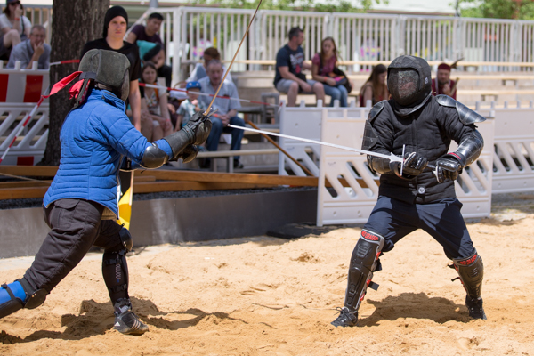

Turniere
Historische europäische Kampfkünste (HEMA) haben in den letzten Jahren an Popularität gewonnen, und Turniere spielen eine zentrale Rolle in dieser Gemeinschaft. Diese Veranstaltungen bieten Fechtern die Möglichkeit, ihre Fähigkeiten in einer wettbewerbsorientierten Umgebung zu testen und zu verbessern.
Turniere im historischen Fechten umfassen verschiedene Disziplinen wie Langschwert, Rapier, Degen und Schwert & Buckler. Teilnehmer treten gegeneinander an, um Techniken und Strategien, die aus historischen Manuskripten rekonstruiert wurden, anzuwenden.
Die Regeln und Bewertungssysteme variieren, um Authentizität und Sicherheit gleichermaßen zu gewährleisten. Solche Turniere fördern nicht nur den sportlichen Wettbewerb, sondern auch den kulturellen Austausch und die Gemeinschaft innerhalb der HEMA-Szene. Sie bieten zudem eine Plattform für Workshops und Seminare, in denen Teilnehmer von erfahrenen Fechtern und Historikern lernen können.
Insgesamt tragen HEMA-Turniere zur Wiederbelebung und Bewahrung europäischer Kampftraditionen bei, während sie gleichzeitig eine moderne sportliche Herausforderung darstellen.
